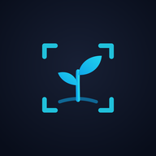

CropView Privacy Policy
Who we are
CropView is a field data-collection tool for geo-tagged crop photography, developed by Somdeep Kundu at RuDRA Lab, C-TARA, IIT Bombay, for agricultural research and field surveys.
What the app uses, and why
- Camera: to take the crop photos you capture.
- Precise location (GPS): to record where each photo was taken, its altitude and accuracy, and to show your position on the map.
- Motion and orientation sensors (compass, tilt): to record which direction the camera was facing and to estimate the ground area shown in each photo.
- Information you type: project name, notes, camera height and crop stage.
Location and sensors are used only while the app is open on screen. CropView does not track you in the background.
Where your data is stored
Photos and their metadata (time, coordinates, heading, tilt, footprint and the details you entered) are saved in the app's private storage on your device. We do not receive, upload or keep a copy of any of it. Uninstalling the app, or clearing its storage, permanently deletes this data, so export anything you want to keep first.
When data leaves your device
- Exports you start. When you save a photo or export a ZIP, GeoJSON or CSV file, the Android share sheet opens and you choose where it goes (for example Google Drive, email, WhatsApp or your files). That destination's own privacy policy then applies.
- Map backgrounds. When you are online, the map loads background tiles from OpenStreetMap and Esri (satellite imagery). As with any map, these services receive your device's IP address and which map area is being displayed, which is usually near where you are. No photos, project names or other CropView data are sent to them. Capture works fully offline; only the map background needs a connection.
- Data Explorer link. The "Data Explorer" button opens a separate CropView web page in your browser. It does not send your captures anywhere; you load exported files into it yourself.
What we do not do
- We do not collect, sell or share personal information.
- We do not use analytics, advertising or tracking tools.
- We do not require an account, name, email address or phone number.
Your choices
- You can deny or withdraw Camera or Location permission at any time in Android Settings → Apps → CropView → Permissions. Capturing photos needs both.
- You can delete individual captures or a whole project inside the app, or remove everything by uninstalling it.
Children
CropView is a research and field-survey tool and is not directed at children under 13.
Changes to this policy
If CropView starts handling data differently, this page will be updated and the effective date changed.
Contact
Questions about this policy: papaisomdeepkundu@gmail.com, or open an issue at github.com/somdeepkundu/cropview-v3.